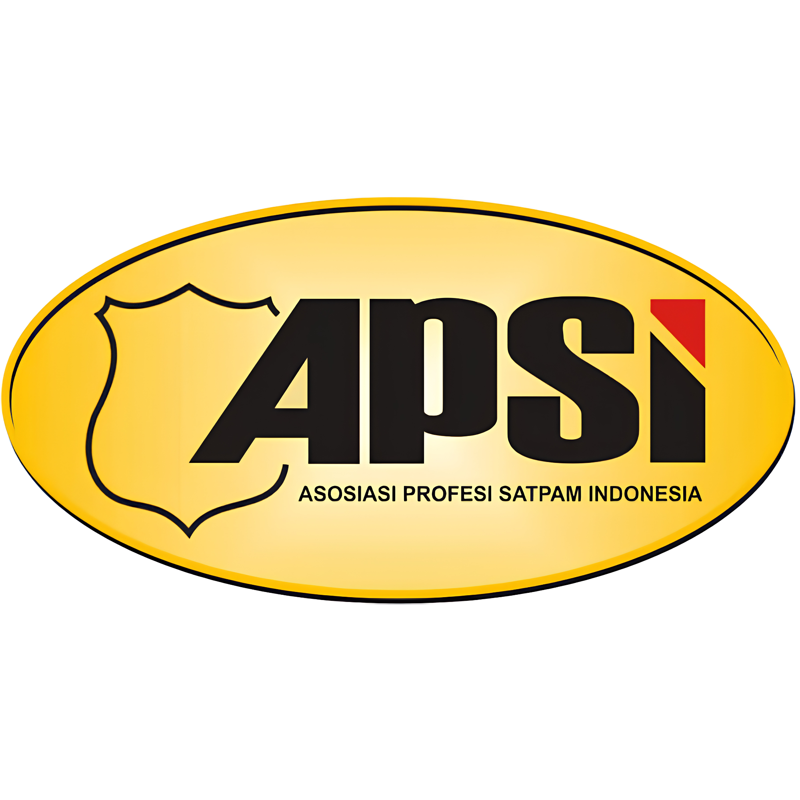
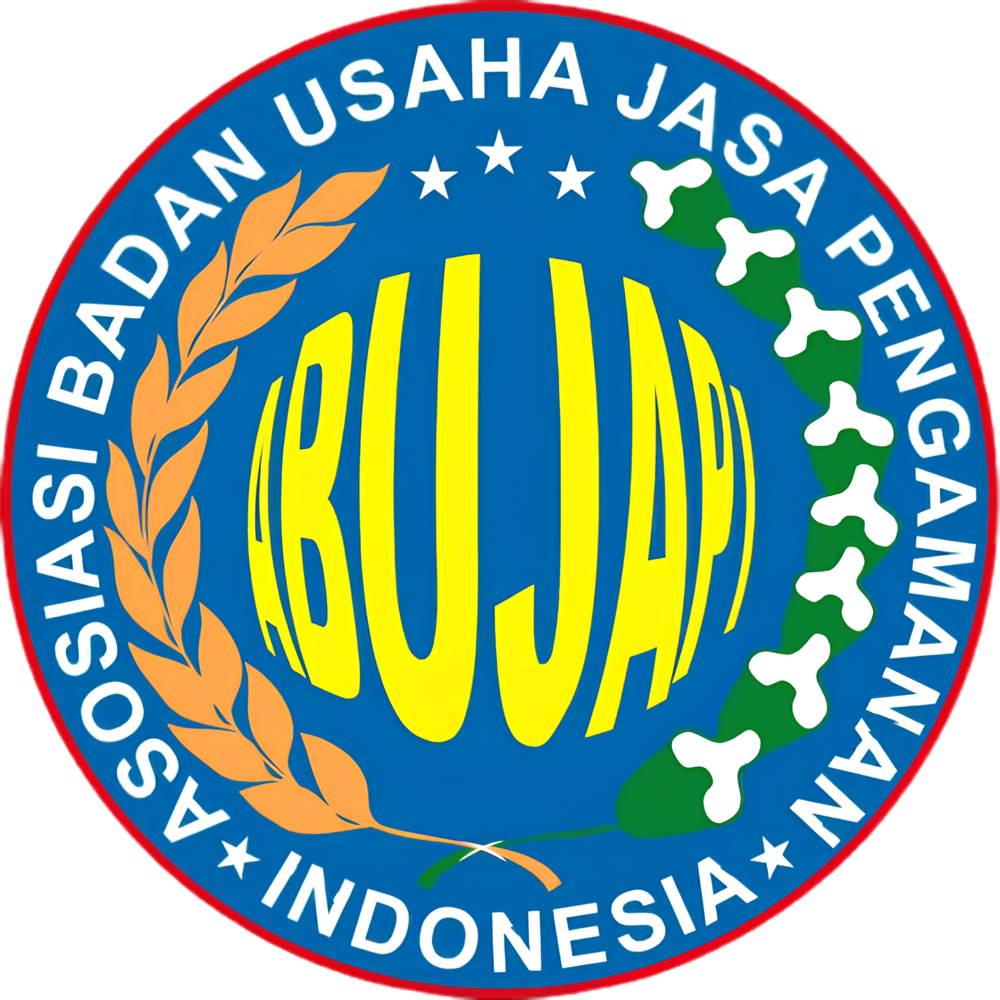

01
Profesional
Standar layanan dan personel yang terarah.
Partner profesional untuk keamanan, kebersihan, dan dukungan operasional.

PT. Sentra Garuda Cakra Pratama (SGS) adalah perusahaan yang bergerak di bidang jasa keamanan (BUJP), serta layanan kebersihan dan office boy profesional.
Kami hadir sebagai mitra strategis bagi perusahaan, instansi, maupun organisasi yang membutuhkan sistem keamanan yang solid, tenaga kerja profesional, serta dukungan operasional harian melalui layanan office boy yang terlatih, disiplin, dan beretika.
Dengan komitmen terhadap kualitas layanan, SGS memastikan setiap tenaga kerja memiliki standar kerja yang optimal untuk mendukung kenyamanan, kebersihan, dan produktivitas lingkungan kerja.
Standar layanan dan personel yang terarah.
Pelaksanaan kerja mengikuti SOP dan pengawasan.
Keamanan, kebersihan, dan support operasional dalam satu mitra.


Solusi keamanan didukung support mobil operasional siaga 7 x 24 jam, metode lapangan dan sistem terintegrasi untuk mendukung kebutuhan klien.

Hubungi Marketing SGS untuk mendiskusikan kebutuhan keamanan dan kebersihan perusahaan Anda.
Hubungi Marketing SGSGoogle Maps